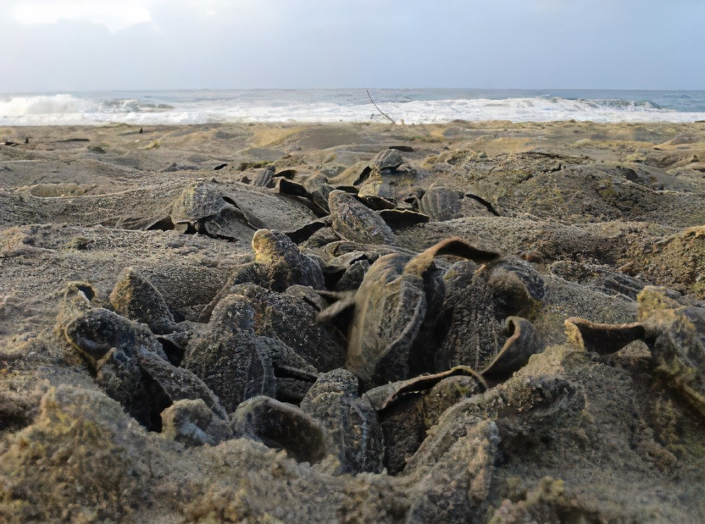
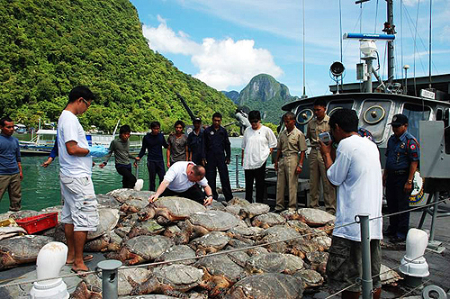
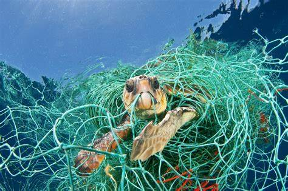

Mitigating Threats to the Turtle Population
The turtle population in Sri Lanka faces several pressing threats that jeopardize their survival and contribute to their decline. These threats have far-reaching consequences not only for the turtles themselves but also for the delicate marine ecosystems they inhabit.This focuses on exploring the various threats faced by turtle populations worldwide and the critical need for conservation strategies to protect their long-term survival. The discussion will delve into specific threats such as habitat destruction, poaching, fisheries bycatch, pollution, and climate change, highlighting their detrimental effects on turtle populations.
The topic will further examine the importance of raising awareness, implementing legislation, and engaging in collaborative efforts to mitigate these threats. It will also explore successful conservation strategies, including habitat preservation, community involvement, sustainable fishing practices, and education programs. The goal is to emphasize the urgency of taking action and promoting effective conservation measures to ensure the continued existence and well-being of turtle populations globally.
Understanding these challenges is crucial to implementing effective conservation strategies and safeguarding the future of these remarkable creatures. In this context, three primary threats to the turtle population in Sri Lanka. Additionally, pollution and marine debris add to the perils faced by these magnificent creatures. By addressing these threats head-on and implementing comprehensive conservation measures, we can strive towards protecting and revitalizing the turtle population, ensuring their longevity and the preservation of Sri Lanka's rich marine biodiversity.
Embark on a captivating journey through the virtual waves and delve into the wonders of our Kosgoda and Bentota Turtle Hatchery webpages, where a world of knowledge awaits, allowing you to immerse yourself in the mesmerizing tales of these magnificent sea creatures.
Nesting Habitat Destruction

One of the major threats to turtles in Sri Lanka is the destruction and degradation of nesting habitats. Coastal development, including construction of hotels, resorts, and infrastructure, often encroaches upon the beaches where turtles come to nest.
As these nesting areas are disturbed or destroyed, turtles have fewer suitable places to lay their eggs, leading to a decline in their reproductive success.
Read More
How to prevent:
- Protected Areas: Establish and effectively manage protected areas that encompass nesting habitats. These areas should be legally protected, adequately funded, and have a management plan that includes measures to mitigate threats to nesting habitats.
- Habitat Restoration: Identify degraded nesting habitats and undertake restoration efforts such as reforestation, habitat enrichment, and removal of invasive species. These actions can help recreate suitable nesting conditions for various species.
- Sustainable Land Use Practices: Encourage sustainable land use practices in areas surrounding nesting habitats. This involves promoting responsible agriculture, forestry, and infrastructure development that minimize habitat destruction and fragmentation.
- Education and Awareness: Raise public awareness about the importance of nesting habitats and the species that rely on them. Education programs can help foster a sense of stewardship and encourage individuals to make environmentally conscious choices.
Poaching and Illegal Wildlife Trade

Poaching and the illegal wildlife trade are significant threats to turtle populations in Sri Lanka. Turtle eggs, meat, and shells are sought after for their perceived medicinal properties and as luxury items.
Despite being protected by law, the illegal collection and trade of turtle products persist, resulting in the loss of both adult turtles and their eggs. Poaching not only disrupts the natural population balance but also prevents the successful hatching and survival of turtle hatchlings.
Read More
How to prevent:
- Strengthen Law Enforcement: Enhance enforcement efforts by providing adequate training and resources to law enforcement agencies responsible for monitoring and combating wildlife crime. Increase patrols in high-risk areas and establish specialized units dedicated to addressing wildlife trafficking.
- Public Awareness and Education: Conduct public awareness campaigns to educate local communities, fishermen, and tourists about the importance of turtle conservation and the negative impacts of poaching and illegal wildlife trade. Emphasize the ecological value of turtles and the legal consequences of engaging in such activities.
- Community Engagement: Involve local communities in turtle conservation initiatives, emphasizing the economic benefits of sustainable tourism and responsible fishing practices. Develop alternative livelihood options that reduce dependence on turtle poaching or the illegal wildlife trade.
- Engage the Tourism Industry: Work with tour operators, hotels, and travel agencies to promote responsible tourism practices that support turtle conservation. Encourage them to avoid promoting or participating in activities that exploit or harm turtles.
Fisheries Bycatch

Fisheries bycatch, which refers to the unintentional capture of non-target species, poses a significant threat to turtles in Sri Lanka. Turtles often become entangled in fishing gear such as nets, lines, and hooks while searching for food. This accidental capture can lead to injuries, drowning, or death.
The use of unsustainable fishing practices, such as unregulated trawling and longline fishing, increases the likelihood of turtles getting caught in fishing gear and can have devastating consequences for their populations.
Read More
How to prevent:
- Turtle Excluder Devices (TEDs): Encourage or mandate the use of Turtle Excluder Devices in fishing gear, especially in trawl nets and shrimp trawlers. TEDs are specially designed escape mechanisms that allow turtles to exit the nets while retaining target catch. Proper installation and regular maintenance of TEDs are essential for their effectiveness.
- Gear Modifications: Explore and promote the use of modified fishing gear that minimizes turtle entanglement and capture. This can include using larger mesh sizes, reducing the soak time of nets, or employing circle hooks that reduce the likelihood of hooking turtles.
- Time and Area Closures: Establish time and area closures in critical turtle habitats during nesting and feeding seasons. These closures can help reduce interactions between turtles and fishing activities, providing a safe haven for turtles to forage and breed.
- Fishery Observer Programs: Implement fishery observer programs to monitor fishing activities and document turtle bycatch. Trained observers can collect data on bycatch rates, species affected, and areas of concern. This information can inform management decisions and improve mitigation efforts.